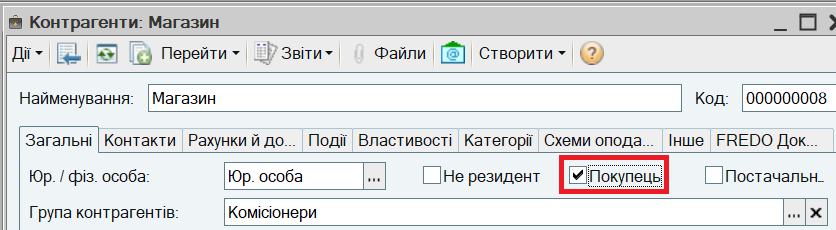
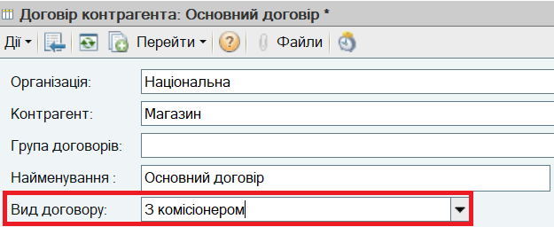
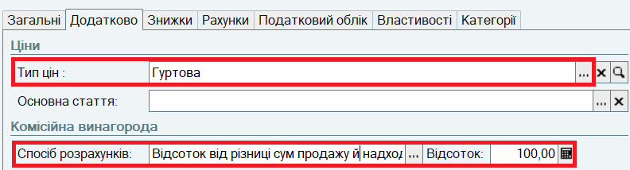
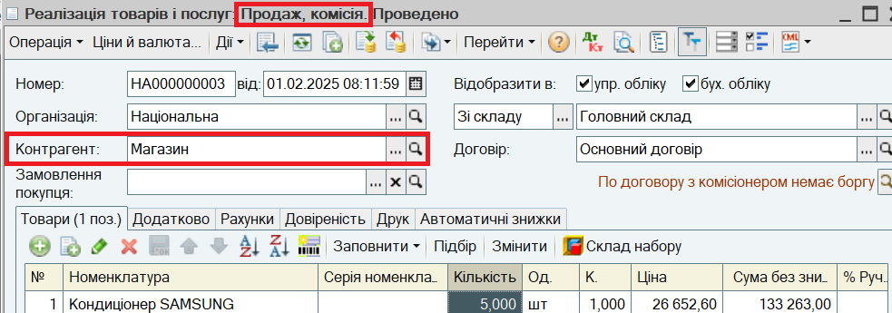
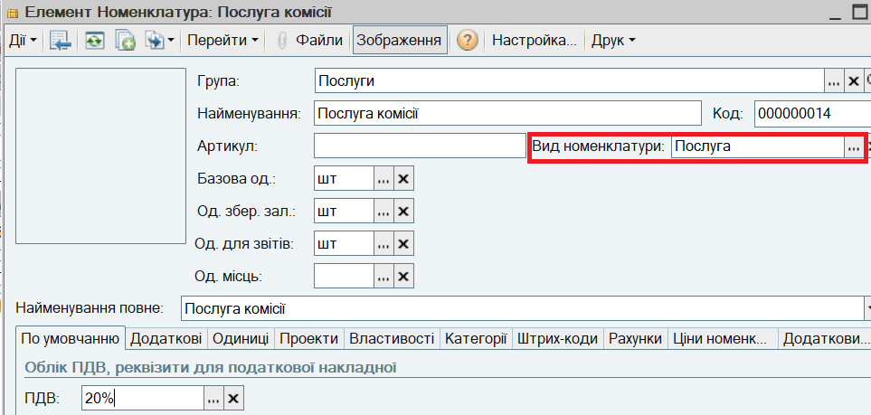
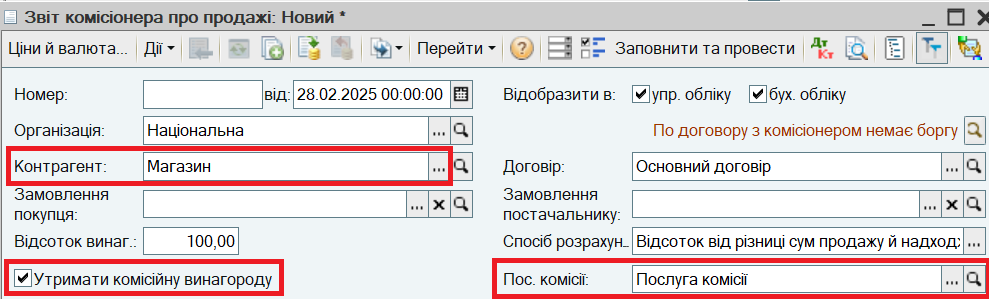
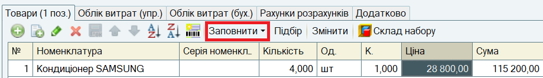
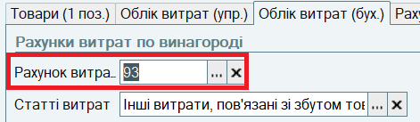
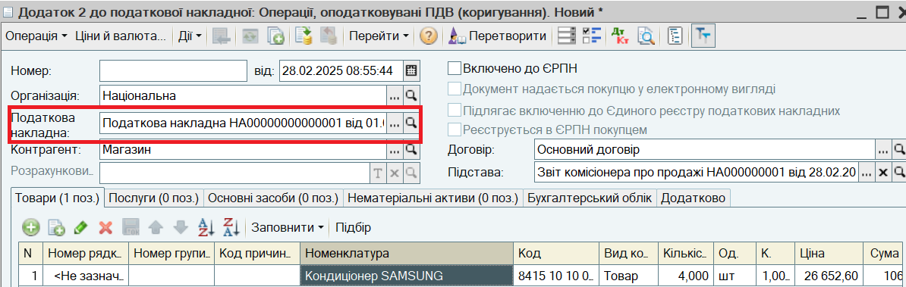

ПРИКЛАД. З магазином укладено договір комісії. Товари передаються в магазин на комісію. В кінці місяця магазин передає звіт про продані товари і перераховує заставну вартість товарів на банківський рахунок, решту оплати залишає собі як комісійну винагороду.
1. Відкрийте групу "Комісіонери" в довіднику Контрагенти і створіть контрагента "Магазин". Встановіть прапор Покупець:

2. Натисніть на кнопку Записати. Перейдіть на закладку Рахунки й договори. Відкрийте створений автоматично "Основний договір" і зазначте для нього Вид договору З комісіонером:

3. Перейдіть на закладку Додатково. Встановіть Тип цін, за яким товари будуть передаватися на комісію і параметри розрахунки комісійної винагороди. Якщо комісіонер компенсує підприємству лише ціну передачі товарів, зазначаються Спосіб розрахунку Відсоток від різниці сум продажу й надходження та Відсоток 100.

Натисніть кнопку ОК, щоб зберегти Договір.
4. Для передачі товарів на комісію оформіть новий документ Реалізація товарів і послуг:

ВАЖЛИВО.
Передача товарів на комісію може бути оформлена за Замовленням покупця з використанням механізмів резервування і розміщення в замовленнях постачальників.
5. На підставі Реалізації товарів і послуг оформіть Податкову накладну.
6. В довідник Номенклатура в групу "Послуги" додайте номенклатурну картку "Послуги комісії". За нею буде відображатися купівля послуг комісії.

6. Зареєструйте в інформаційній базі отриманий від комісіонера звіт про продажі. Для цього відкрийте пункт меню Документи - Продажі - Звіти комісіонерів про продажі і введіть новий документ Звіт комісіонера про продажі:

7. Натисніть кнопку Заповнити - Заповнити по договору. Таблична частина буде заповнена товарами, які були передані на комісію і за які комісіонер ще не відзвітував. Відкоригуйте табличну частину вручну відповідно до отриманого звіту. Зі звіту комісіонера заповнюються Кількість та Ціна продажу кінцевому покупцю.

8. На закладці Облік витрат (бух.) зазначте Рахунок витрат 93:

Проведіть документ Звіт комісіонера про продажі.
9. Хоча згідно умов договору комісійна винагорода залишається у комісіонера, продаж було здійснено від імені організації "Національна" за ціною, що відрізняється від ціни, зазначеної у Податковій накладній. Тому на підставі Звіту комісіонера про продажі потрібно ввести Додаток 2 до податкової накладної. Документ заповнюється автоматично, вручну потрібно зазначити тільки Податкову накладну, до якої виписується коригування.

10. При отриманні грошових коштів від комісіонера оформіть документ Платіжне доручення вхідне. Документ введіть на підставі документа Звіт комісіонера про продажі. Документ заповнюється автоматично. Сума оплати визначається як сума продажу за вирахуванням комісійної винагороди (для наведеного прикладу - сума передачі проданих товарів).
Наступний розділ: "Продаж товарів вроздріб в торгівельному залі"